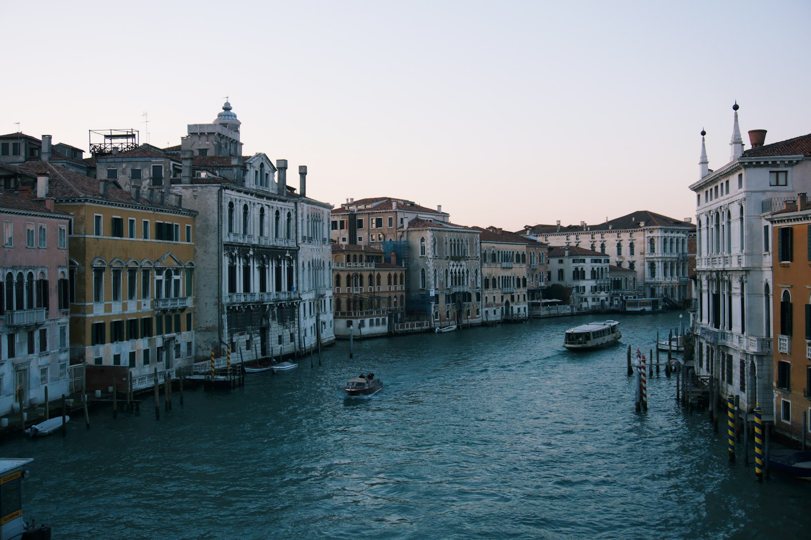
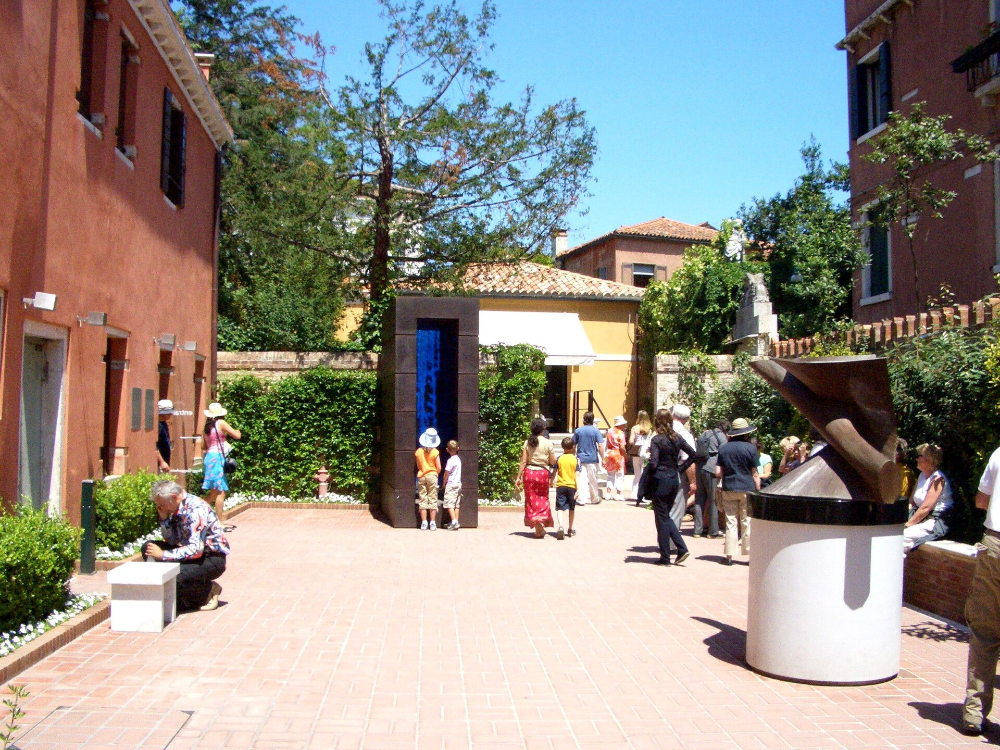

美国收藏家佩姬·古根海姆（1898-1979）的故居：未完工的 18 世纪宫殿韦尼耶·莱奥尼宫，一层是她生前生活的房间与花园，陈列着毕加索、康定斯基、马格利特、波洛克、达利、布朗库西--20 世纪上半叶艺术的“全家福”，按她生前的居家方式挂着。
看点路线
Il Percorso
- 1入口花园：马里尼《城市天使》（那匹著名的马）与佩姬夫妇墓
- 2客厅原状陈列：佩姬的书房与床（床头是她的银豹雕像）
- 3波洛克展厅：滴画《魔法森林》系列--她一手带出来的美国人
- 4露台看大运河：威尼斯现代艺术的最佳观景位
馆藏名作
La Collezione Peggy Guggenheim
现代绘画Pittura Moderna · 10 件
《炼金术》
佩姬的“天使投资”成果：波洛克还没发明滴画之前的巨幅--颜料的洪流已经按捺不住。抽象表现主义在地面上滑跑的瞬间。（版权原因展出现场观看）
《若干圆圈》
包豪斯时期的康定斯基：圆与圆之间的宇宙引力。他在包豪斯的同事说这幅画“像用色彩做的天文学”。
《海滩上》
变形的浴者在海边纠缠--毕加索在《格尔尼卡》同年的另一面：战争的阴影画不进沙滩，就画进扭曲的肢体。
《反教皇》
恩斯特与佩姬婚姻期间的杰作：绿脸的僭主与奇怪的随从--超现实主义对权力的漫画审判。
《液体欲望的诞生》
水花凝固成达利式的柔软形体：弗洛伊德梦境的油画翻译。达利是佩姬巴黎沙龙的常客。
《光之帝国》
白昼的街灯悬在深夜的天空下--马格利特最著名的悖论图像之一：一幅安静的画，一句响的反问。（原作现场观看）
米罗的作品
米罗的星与符号：把加泰罗尼亚的民间线条送上梦境轨道。佩姬按“一张接一张”的原则收藏他的系列。
马松与超现实主义群像
自动书写、沙画与鱼的战争：超现实主义实验场的全阵容--佩姬在战时巴黎“捡漏”的另一半。
立体主义与巴黎画派
从塞尚式的几何到拼贴的报纸碎片：现代主义开端的“教科书柜”，佩姬用一年时间攒齐。
美国抽象表现主义与流亡者
二战把欧洲艺术家赶到纽约，佩姬的画廊把纽约艺术家带回欧洲--1948 年威尼斯双年展的美国馆，世界艺术中心易主的现场。
雕塑与立体作品Scultura · 10 件

《空间中连续性的独特形式》
未来主义的宣言之作：疾走的人体被风与速度切开，肌肉像火焰般向后燃烧。波丘尼 1916 年坠马身亡，年仅 33 岁--意大利现代雕塑的零公里。
《城市天使》
庭院入口那尊勃起的人马雕塑是威尼斯最著名的“丑闻”作品--因面向教堂方向“不敬”，马里尼索性越改越挑衅。佩姬叫它“我的看门人”。
《马亚斯特拉》
罗马尼亚大师的大理石之鸟：从具象到抽象之间那道最优雅的坡。布朗库西的工作室哲学--“雕到不能再减为止”。
贾科梅蒂的细长人形
火柴棍般孤独的人像：存在主义雕塑的签名式笔迹。贾科梅蒂战后重返巴黎，把战后的人画成一根根火柴。
《与王后对弈的国王》
恩斯特在流亡美国时雕的国际象棋：超现实主义者的“权力游戏”。他晚年痴迷下棋，佩姬的前夫把棋盘当成了哲学。
阿尔普的有机雕塑
像卵石与种子的生物形态：达达老将在二战后转向“生长的几何”。阿尔普的哲学：让雕塑自己长出来。
恩斯特雕塑群
从《俄狄浦斯》到月球鸟：画家恩斯特的“第二职业”--雕塑是他超现实主义的立体版。

露台上的雕塑
大运河露台是佩姬的“户外展厅”：雕塑面向泻湖列队--现代艺术与文艺复兴城市隔水对望，这是全威尼斯最奢侈的展线。

花园雕塑群
妮基·圣法勒式的彩色爆炸与现代石雕混在柠檬树间--花园是“未完成宫”的另一半：生活、艺术与狗，一起晒太阳。
佩姬之墓与拉萨狗们
佩姬与她的 14 只拉萨狗葬在花园角落，墓碑是一块朴素的地砖。一位把整个世纪的艺术当家具的女人，最后只想留在威尼斯。
历史故事
Le Storie
壹一天买一幅画的女人
1939 年二战爆发，佩姬·古根海姆（古根海姆矿业家族的女继承人）正计划在巴黎开美术馆。她定下一条军规：“一天买一幅画。”
她后来回忆：“我错过了五幅毕加索（嫌贵），但买到了布朗库西的《空中之鸟》--他哭着为我雕了三天底座。”战争结束时，她已攒下 20 世纪上半叶艺术的半壁江山。
1941 年她带着藏品回纽约开设“本世纪艺术”画廊--纽约取代巴黎成为世界艺术中心的那十年，她家的客厅是引擎之一。
贰最后停在威尼斯
1947 年威尼斯双年展邀她展出收藏--欧洲第一次成批看到美国抽象表现主义。1949 年她买下韦尼耶·莱奥尼宫，此后 30 年，宫殿一层白天向公众开放，晚上就是她的家。
她的沙龙成为 20 世纪下半叶的传奇：佩姬戴着艺术家朋友送的特制眼镜（一只茶色一只白色）、牵着拉萨狗出现在双年展。
1976 年她把宫殿与全部收藏捐给古根海姆基金会，条件是藏品永不离开威尼斯。1979 年她与 14 只拉萨狗一起葬在花园--一位把整个世纪的艺术当家具的女人，最后只想留在威尼斯。
叁波洛克与“天使投资人”
佩姬是波洛克的“天使投资人”：每月发津贴、给展览、给订单。1943 年为她画的长卷《Mural》成了他走向滴画法的跳板。
收藏馆里陈列的早期作品，能看到“抽象表现主义”还没起飞时在地面上滑跑的样子：颜料的洪流已经按捺不住，只是还没自由落地。
没有这位 heiress 的发薪日，美国现代艺术的起飞可能要晚十年--“投资人”这个词在艺术史里，有时就该这么具体。
肆《城市天使》的丑闻
庭院入口那尊勃起的人马雕塑是马里诺·马里尼 1948 年的作品--面向圣马可教堂方向，当年被教会与市府认为“有伤风化”。
马里尼原本的版本含蓄，争议之后他索性越改越挑衅--把“问题作品”改成“永久声明”。佩姬说这是她的“看门人”。
今天它与圣马可钟楼隔着大运河对望：现代艺术与文艺复兴的这种日常对峙，是威尼斯当代生活的一部分。
伍马格利特与“版权边界”
《光之帝国》系列是馆藏的明星--但马格利特 1967 年才去世，作品仍在版权保护期，公开展示的照片受到限制。
因此在这份导览里，它以文字卡出现：白昼的街灯悬在深夜的天空下。原作请到馆内看--这恰好是欣赏超现实主义的正确方式：先在脑内成像。
这是现代艺术旅行的一个常识：卒年不足 70 年的艺术家（马格利特、波洛克、罗斯科……）的作品，公开图库里都没有高质量公有领域图片。
陆未完成宫的“一层人生”
韦尼耶·莱奥尼宫原计划五层，只建了一层就停工--威尼斯人叫它“未完成宫”（Il Palazzo Nonfinito），一裸三百年。
佩姬 1949 年买下它时，只有一层可住：她的客厅挂毕加索、卧室对面是布朗库西--现代艺术第一次以“日常室友”的方式生活。
今天馆内保留了她的书房与部分起居原状--参观动线的最后，你走进的不是展厅，是 20 世纪艺术史住过的那间卧室。
柒眼镜、拉萨狗与“佩姬的规则”
佩姬的公众形象三件套：特制眼镜（两色镜片）、拉萨狗、与一句名言“我不是收藏家，我是美术馆”。
她的遗嘱条款极其具体：藏品不得离开威尼斯、花园的狗墓不得迁移、她房间的陈设保持原样--一份把“家”写进法律的遗嘱。
花园角落那排小小的墓碑是 14 只拉萨狗。游客踩着石板路去看波丘尼，很少有人低头--这正是佩姬式的幽默：重要的东西，不放在显眼处。
捌1948：双年展的“美国队”
1948 年威尼斯双年展，佩姬的收藏在希腊馆展出--这是欧洲战后第一次看到立体主义、超现实主义与美国抽象表现主义的整体阵容。
评论界称之为“一个小型现代艺术博物馆的空降”。从那届起，双年展从“意大利的沙龙”变成“世界的坐标系”。
大运河对岸的绿地（Giardini）就是当年展场--站在佩姬的露台望过去，现代艺术地理史的那次转折，就在眼前这片水面上发生。
玖“雕塑的花园”与水的展线
花园与露台是佩姬的“户外展厅”：波丘尼站在入口，马里尼守着运河，恩斯特的雕塑群藏在柠檬树间--展线一直延伸到水面。
从露台望圣马可方向：现代雕塑与文艺igine 城市隔水对望--这是全威尼斯最奢侈的一条“策展动线”，免费的（花园部分需门票，但视野是城市送的）。
下午茶时段的露台咖啡正对圣母安康圣殿--把 20 世纪艺术史喝成一杯 espresso 的时间，一天只有几小时。
拾佩姬的“一天”参观法
馆藏规模适中（1-1.5 小时），最佳组合是“学院美术馆（上午）-> 午餐 -> 佩姬（下午）-> 露台咖啡（16:00）--一古一今，威尼斯艺术日的完整光谱。
语音导览含佩姬本人的录音片段--听她用纽约口音讲威尼斯，是隐藏彩蛋。
旺季（4-10 月）每日开放，淡季周二闭馆--出发前查官网日历，这是威尼斯少数“周一开周二闭”的馆。
参观贴士
Consigli Pratici
- 旺季（4-10 月）每日开放，淡季周二闭--出发前查官网日历
- 馆藏规模适中（1-1.5h），与学院美术馆同日连看（隔桥相望）是黄金组合
- 语音导览含佩姬本人的录音片段--听她用纽约口音讲威尼斯，是隐藏彩蛋
- 咖啡馆露台正对大运河，下午茶时段圣玛利亚健康圣殿在对面闪光
- 拍照禁闪光；波洛克展厅人流大，先直奔最里侧再倒序看
- 门票含特展；学生与 65+ 有折扣
顺路同游
Da Non Perdere